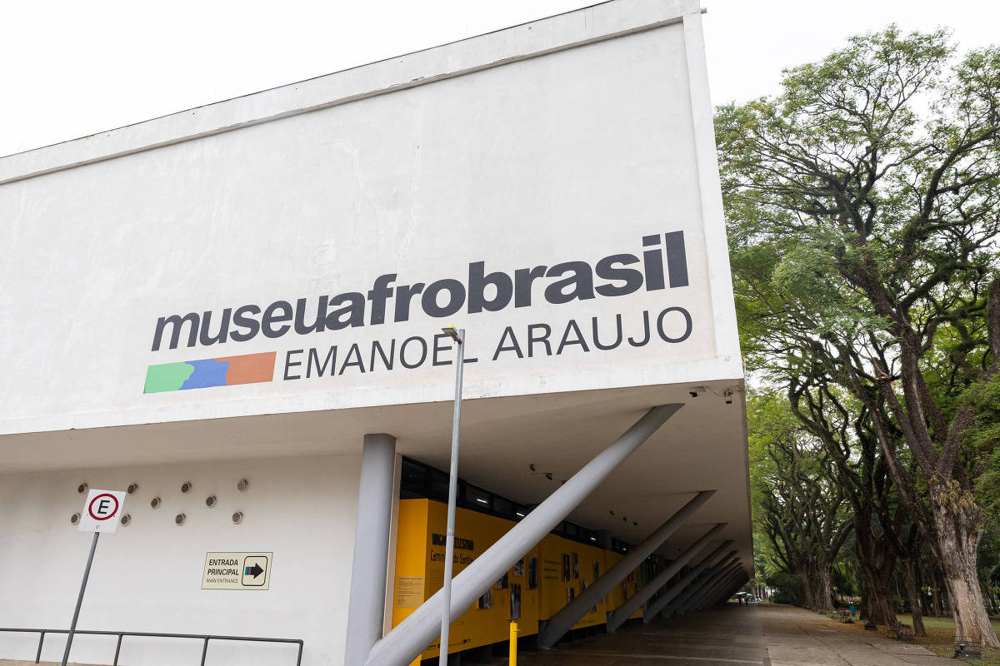

Museu Afro Brasil
star
star
star
star
star
5.0
Uma jornada profunda pela história, arte e cultura africana e afro-brasileira, explorando narrativas de resistência e criatividade.
Histórias e identidades africanas
Esta expedição mergulhou nas coleções do Museu Afro Brasil, explorando arte, artefatos históricos e expressões culturais que contam a história da diáspora africana. Os participantes vivenciaram a riqueza da herança cultural através de peças autênticas e narrativas empoderadoras.
- Exploração de acervo sobre história africana
- Compreensão da influência cultural afro-brasileira
- Reflexão sobre identidade e resistência
A visita reforçou a importância de conhecer e valorizar as múltiplas narrativas que formam a identidade cultural brasileira.